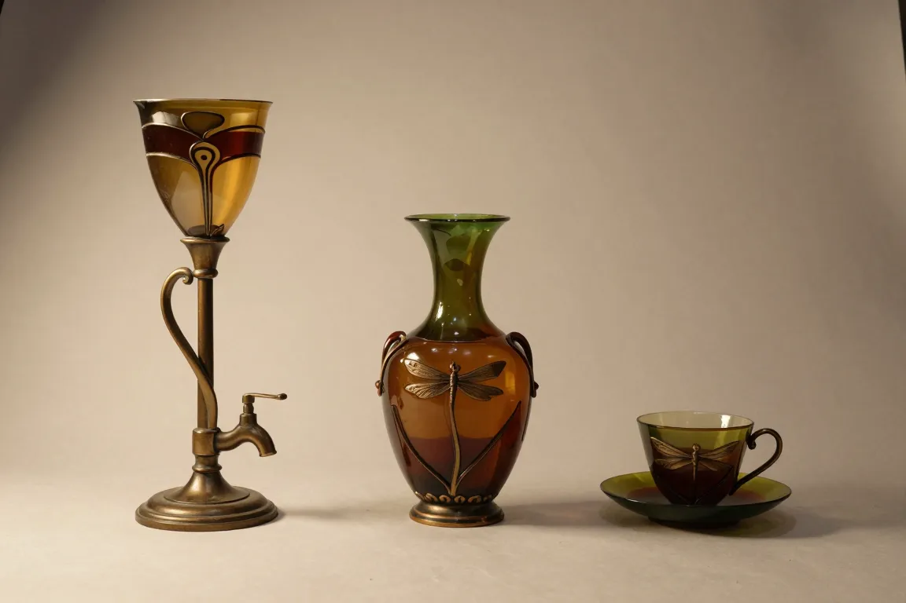

промышленный дизайн · 1893–1914 · также: Предмет югендстиля, Предмет «Модерн-стайл», Предмет в стиле Либерти
Светильники, стекло, мебель и фурнитура, нарисованные линией растительного стебля: литая бронза, художественное стекло, резная древесина плодовых деревьев и фарфор, с одной длинной кривой, которая соединяет конструкцию и орнамент.

Главная идея
Предмет растёт как растение: его конструкция и орнамент — одна изогнутая линия, которую мастер делает из лучшего материала.
Принципы дизайна
Рисуйте каждую опору как стебель растения: тонкую у корня изгиба и толстую там, где её встречает нагрузка.
Соединяйте конструкцию и орнамент одной S-образной линией; ножка, ручка и лист — один штрих.
Берите цветное художественное стекло в два–четыре слоя для абажура или вазы и пропускайте через него свет.
Отливайте металлические детали из бронзы или латуни и давайте им коричневую или зелёную патину.
Режьте древесину плодовых деревьев с изогнутой кромкой; оставляйте на каждом углу мягкий радиус 3–5 мм.
Берите мотив из природы: ирис, орхидею, кувшинку, стрекозу и чертополох.
Делайте каждую вещь единым целым с комнатой: одна кривая идёт по светильнику, крану, стулу и ручке.
Антипаттерны
Прямые стержни и острые прямые углы
Машинно-совершенный хром без следа руки
Ревайвл-орнамент вроде листьев аканта или готических крабов